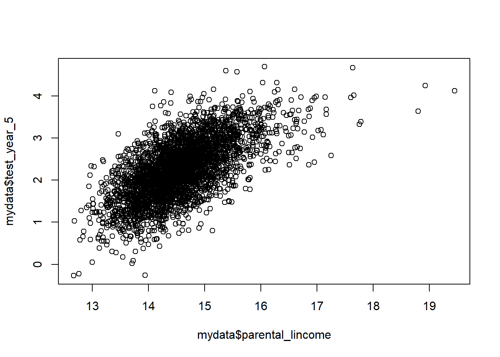
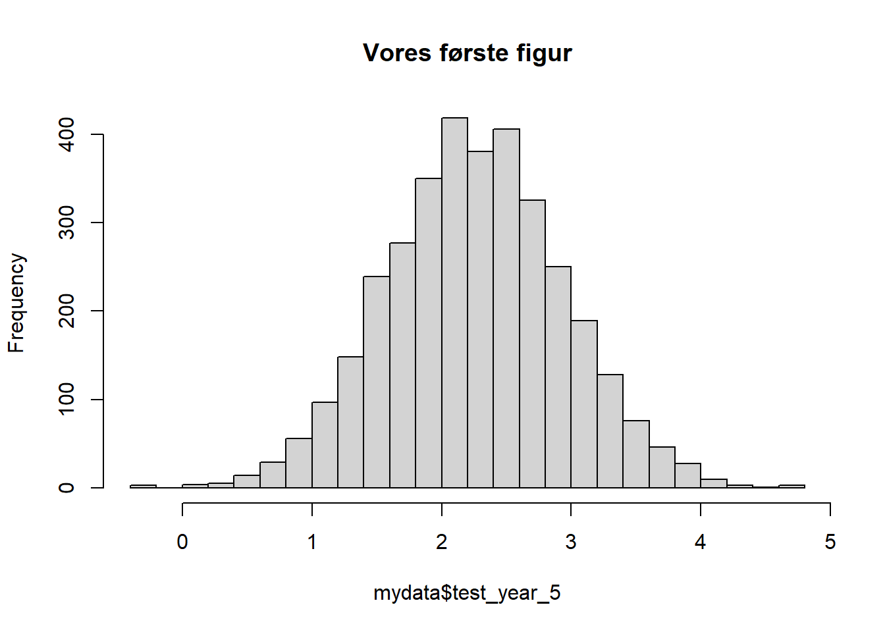

# Set working directory
setwd("M:\\Åben mappe\\Intro til R")3 De første data i R
3.1 Set working directory
Jeg starter med at fortælle R hvor på computeren jeg arbejder med funktionen setwd():
Obs.: Bemærk at vi bruger “\” i stedet for kun ““. Mere om det senere!
### Load data
Vi loader nu det csv data vi har liggende i mappen og gemmer det under navnet mydata.
Bemærk, fordi R, til forskel fra R, kan loade mange datasæt på samme tid, bliver vi nød til at navngive dem. I Stata ville vi typisk bruge use eller import afhængigt af formattet. I R er der er et hav af forskellige muligheder. Her åbner jeg en csv-fil, så jeg bruger read.csv().
# Load data
mydata<-read.csv("school_data_1.csv")3.2 Browse data
Vi kan nu se på data ligesom vi gør med browse i Stata. Her kan vi bruge View():
# View data
View(mydata)Bemærk forskellen til Stata, at vi her nævner navnet på det datasæt vi vil se. Det vil gå igen i stort set alt vi gør, at vi skal nævne navnet på hvilket datasæt vi vil bruge. Typisk vil jeg dog ikke bruge View, men i stedet head() eller tail() for at se hhv. de første og sidste 6 observationer i data.
#Head
head(mydata) person_id school_id summercamp female parental_schooling parental_lincome
1 1 5 0 1 10 12.93921
2 2 14 1 0 11 14.73739
3 3 7 1 0 14 16.08326
4 4 8 0 0 12 14.60808
5 5 9 1 0 11 13.75679
6 6 26 1 1 11 14.70552
test_year_5 test_year_6
1 NA 1.636284
2 1.297036 2.561449
3 2.761908 3.526002
4 1.772913 2.381062
5 1.180356 1.959818
6 2.439802 2.810571# Tail
tail(mydata) person_id school_id summercamp female parental_schooling parental_lincome
3486 3486 21 1 1 11 14.61192
3487 3487 7 0 1 11 14.32667
3488 3488 2 1 0 12 14.52551
3489 3489 17 0 1 12 15.47327
3490 3490 19 0 0 16 16.25537
3491 3491 30 0 0 10 13.34783
test_year_5 test_year_6
3486 2.698968 2.202135
3487 2.673548 2.167499
3488 2.475244 2.682903
3489 NA 2.932665
3490 2.443172 2.341365
3491 2.164831 2.1417303.3 Summary statistics
Hvis vi gerne vil have gennemsnit, standardafvigelse osv, så kan vi bruge summary(). Bemærk at summary() er en meget alsidig funktion som kan opsummere alt muligt. Det får vi at se senere. Der er også langt bedre måder at få summary statistics i R, men det kommer vi også tilbage til. Det her er den mest basic måde.
# Summary statistics
summary(mydata) person_id school_id summercamp female
Min. : 1.0 Min. : 1.00 Min. :0.0000 Min. :0.0000
1st Qu.: 873.5 1st Qu.: 8.00 1st Qu.:0.0000 1st Qu.:0.0000
Median :1746.0 Median :15.00 Median :0.0000 Median :1.0000
Mean :1746.0 Mean :15.66 Mean :0.4589 Mean :0.5153
3rd Qu.:2618.5 3rd Qu.:23.00 3rd Qu.:1.0000 3rd Qu.:1.0000
Max. :3491.0 Max. :30.00 Max. :1.0000 Max. :1.0000
parental_schooling parental_lincome test_year_5 test_year_6
Min. :10.00 Min. :12.67 Min. :-0.2696 Min. :0.2824
1st Qu.:11.00 1st Qu.:14.12 1st Qu.: 1.7997 1st Qu.:2.0071
Median :11.00 Median :14.52 Median : 2.2583 Median :2.4492
Mean :11.32 Mean :14.56 Mean : 2.2589 Mean :2.5174
3rd Qu.:12.00 3rd Qu.:14.95 3rd Qu.: 2.7154 3rd Qu.:3.0185
Max. :23.00 Max. :19.45 Max. : 4.6897 Max. :4.9831
NA's :5 NA's :6 NA's :5 3.4 Tabulate
Vi kan også tabullere enkelte variable (ligesom tabulate i Stata) med table(). Her bruger vi mydata$female til at fortælle R at vi vil have tabulate for variablen female i datasættet mydata.
# Tabulate
table(mydata$female)
0 1
1692 1799 Og med to variable:
# Tabulate two variables
table(mydata$female,mydata$summercamp)
0 1
0 931 761
1 958 8413.5 Grafer
Vi kan lave et scatterplot med plot() funktionen. Bemærk igen bruger vi $ til at fortælle hvilke variable vi vil bruge.
# Scatter plot
plot(mydata$parental_lincome,mydata$test_year_5)
Vi kan også lave et histogram (det har vi jo allerede prøvet). Bemærk at jeg sætter breaks=30 for at få 30 grupper.
# Histogram plot
hist(mydata$test_year_5,breaks=30,main="Vores første figur")
3.6 Regressioner
R´s svar på Statas reg er lm(), så lad os prøve den:
# Histogram plot
lm(test_year_5~summercamp+parental_lincome+factor(female),data=mydata)
Call:
lm(formula = test_year_5 ~ summercamp + parental_lincome + factor(female),
data = mydata)
Coefficients:
(Intercept) summercamp parental_lincome factor(female)1
-7.11155 -0.01545 0.64347 0.01265 Bemærk
- Jeg angiver en formel af formatet
y~x1+x2+... - Jeg benytter
factor()for at fortælle R at det er en kategorisk variabel (ligesomi.i Stata.). Det behøver jeg egentlig ikke for female her, fordi den kun har værdierne 0 og 1.
Vi bemærker også et meget begrænsede output. Vi kan få lidt mere med summary(). Nu kom den allerede i brug igen!
# Estimer model og gem resultatet i "minregressioN"
minregression<-lm(test_year_5~summercamp+parental_lincome+factor(female),data=mydata)
# Vi "summary" af min regression.
summary(minregression)
Call:
lm(formula = test_year_5 ~ summercamp + parental_lincome + factor(female),
data = mydata)
Residuals:
Min 1Q Median 3Q Max
-2.1215 -0.3435 0.0137 0.3494 2.1547
Coefficients:
Estimate Std. Error t value Pr(>|t|)
(Intercept) -7.11155 0.19452 -36.559 <2e-16 ***
summercamp -0.01545 0.01880 -0.822 0.411
parental_lincome 0.64347 0.01353 47.574 <2e-16 ***
factor(female)1 0.01265 0.01769 0.715 0.475
---
Signif. codes: 0 '***' 0.001 '**' 0.01 '*' 0.05 '.' 0.1 ' ' 1
Residual standard error: 0.5218 on 3481 degrees of freedom
(6 observations deleted due to missingness)
Multiple R-squared: 0.4197, Adjusted R-squared: 0.4192
F-statistic: 839.4 on 3 and 3481 DF, p-value: < 2.2e-16